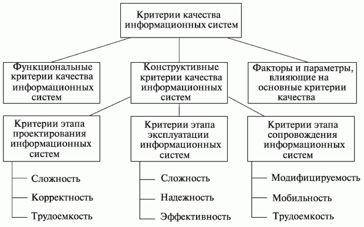

[ Тематический план ] [ Оценка качества функционирования информационной системы. ] [ 1 ] [ 2 ] [ 3 ] [ 4 ]
Качество ИС
Оценка качества ИС - задача крайне сложная из-за многообразия интересов пользователей. Поэтому невозможно предложить одну универсальную меру качества и приходится использовать ряд характеристик, охватывающих весь спектр предъявляемых требований. Наиболее близки к задачам оценки качества ИС модели качества программного обеспечения, являющегося одним из важных составных частей ИС. В настоящее время используется несколько абстрактных моделей качества программного обеспечения, основанных на определениях характеристики качества, показателя качества, критерия и метрики.
Критерий может быть определен как независимый атрибут ИС или процесса ее создания. С помощью такого критерия может быть измерена характеристика качества ИС на основе той или иной метрики. Совокупность нескольких критериев определяет показатель качества ,формируемый исходя из требований, предъявляемых к ИС. В настоящее время наибольшее распространение получила иерархическая модель взаимосвязи компонентов качества ИС. Вначале определяются характеристики качества, в числе которых могут быть, например:
Далее формируются показатели, к числу которых могут быть отнесены:
Каждому показателю качества ставится в соответствие группа критериев. Для указанных показателей приведем возможные критерии. Надо отметить, что один и тот же критерий может характеризовать несколько показателей:
С помощью метрик можно дать количественную или качественную оценку качества ИС. Различают следующие виды метрических шкал для измерения критериев.
Первый тип - метрики, которые используют интервальную шкалу, характеризуемую относительными величинами реально измеряемых физических показателей, например, временем наработки на отказ, вероятностью ошибки, объемом информации и других.
Второй тип - метрики, которым соответствует порядковая шкала, позволяющая ранжировать характеристики путем сравнения с опорными значениями.
Третий тип - метрики, которым соответствуют номинальная, или категорированная шкала, определяющая наличие рассматриваемого свойства или признака у рассматриваемого объекта без учета градаций по этому признаку. Так, например, интерфейс может быть "простым для понимания", "умеренно простым", "сложным для понимания".
Развитием иерархического подхода является представленная на рис. 10.1 модель классификации критериев качества информационных систем. С помощью функциональных критериев оценивается степень выполнения ИС основных целей или задач. Конструктивные критерии предназначены для оценки компонент ИС, не зависящих от целевого назначения.
Одним из путей обеспечения качества
ИС является сертификация .В США Радиотехническая
комиссия по аэронавтике в своем руководящем документе определяет процесс сертификации следующим образом:

Рис. 10.1. Модель
классификации критериев качества информационных систем
" Сертификация - процесс официально выполняемой функции системы ... путем удостоверения, что функция ... удовлетворяет требованиям заказчика, а также государственным нормативным документам".
В настоящее время не существует стандартов, полностью удовлетворяющих оценке качества ИС. В западноевропейских странах имеется ряд стандартов, определяющих основы сертификации программных систем. Стандарт Великобритании (BS750) описывает структурные построения программных систем, при соблюдении которых может быть получен документ, гарантирующий качество на государственном уровне. Имеется международный аналог указанного стандарта (ISO9000) и аналог для стран-членов НАТО (AQAP1). Существующая в нашей стране система нормативно-технических документов относит программное обеспечение к "продукции производственно-технического назначения", которая рассматривается как материальный объект. Однако программное обеспечение является скорее абстрактной нематериальной сферой. Существующие ГОСТы (например, ГОСТ 28195-89 "Оценка качества программных средств. Общие положения") явно устарели и являются неполными.